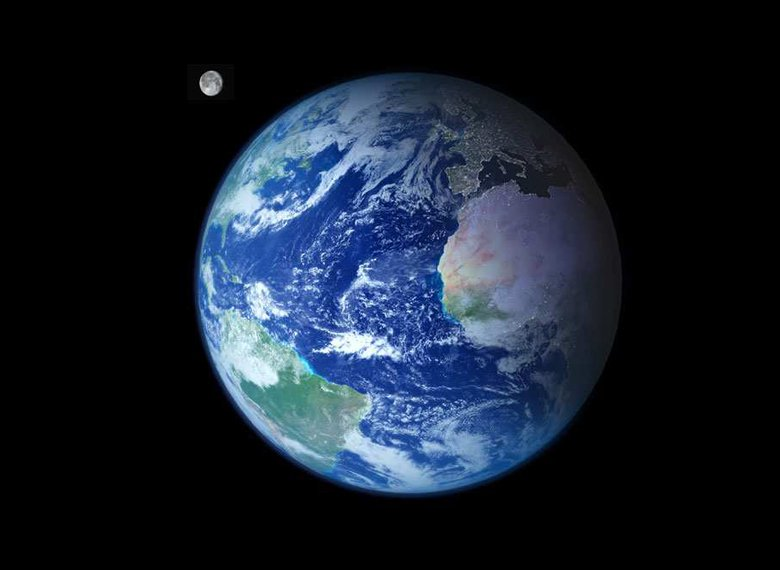
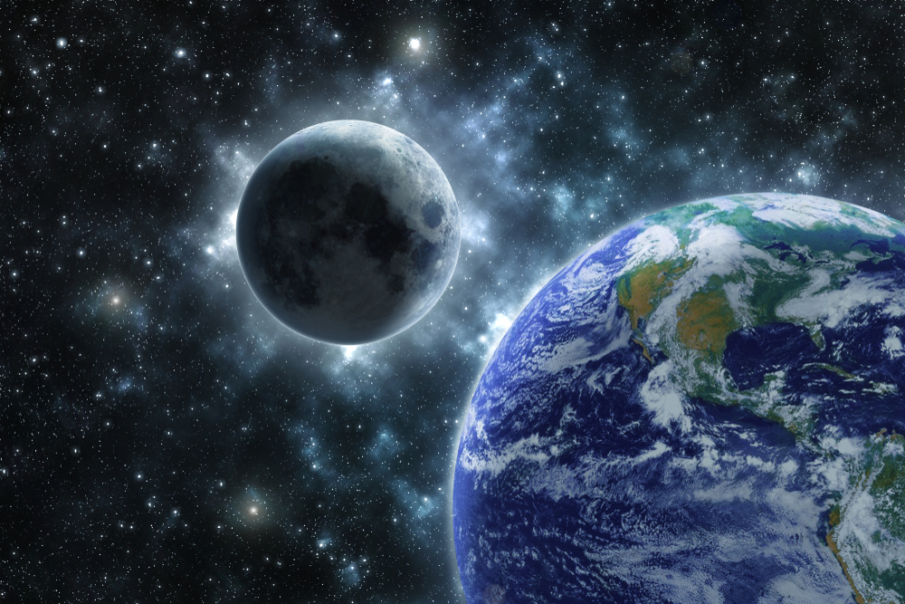

— материальный мир Вселенной, в сущности — основной объект изучения естественных наук.В быту слово «природа» часто употребляется в значении естественная среда обитания (всё, что не создано человеком).
— единственная известная в настоящий момент планета, на которой есть жизнь. Её природные особенности являются предметом многих научных исследований. Она является третьей по счёту от Солнца планетой Солнечной системы и крупнейшей по диаметру, массе и плотности среди планет земной группы. Основные климатические особенности Земли заключаются в наличии двух больших полярных регионов, двух относительно узких умеренных зон и одного широкого экваториально-тропического региона[2]. Количество осадков на планете варьируется в широких пределах в зависимости от местоположения и колеблется от миллиметра до нескольких метров осадков в год. Около 71 % поверхности Земли занимает океан. Остальная часть состоит из континентов и островов, причём бо́льшая часть суши, населённой людьми, находится в северном полушарии.Эволюция Земли происходила посредством геологических и биологических процессов, которые оставили следы первоначальных условий. Поверхность планеты разделена на несколько непрерывно движущихся литосферных плит, которые приводят к периодическому слиянию и разъединению континентов. Внутренняя часть Земли состоит из толстого слоя расплавленной мантии и железного ядра, генерирующего магнитное поле.
Атмосфера Земли является ключевым фактором в поддержании планетарной экосистемы. Тонкий слой газов, окружающий Землю, удерживается под действием силы тяжести планеты. Сухой воздух атмосферы состоит из 78 % азота, 21 % кислорода, 1 % аргона, углекислого газа и других соединений в незначительных количествах. Также воздух содержит непостоянное количество водяного пара[19][20]. Атмосферное давление снижается постепенно с увеличением высоты и на высоте около 19—20 км уменьшается до такой степени, что начинается кипение воды и межтканевой жидкости в организме человека. Поэтому с точки зрения физиологии человека, «космос» начинается уже на высоте 15—19 км. Атмосфера Земли на высоте от 11 до 50 км (в тропических широтах 25—30 км, в умеренных 20—25, в полярных 15—20) имеет так называемый озоновый слой, состоящий из молекул O3. Он играет важную роль в поглощении опасного ультрафиолетового (УФ) излучения, тем самым защищая всё живое на поверхности от губительного излучения. Атмосфера также сохраняет тепло в ночное время, уменьшая перепады температур.Планетарный климат — мера долгосрочных тенденций в погоде. На климат планеты влияют различные факторы, в том числе океанические течения, поверхностное альбедо, парниковые газы, изменение солнечной светимости и изменения орбиты планеты. Согласно заключениям учёных, Земля в прошлом претерпевала кардинальные изменения климата, включая ледниковые периоды.Климат региона зависит от ряда факторов и прежде всего от широты. Диапазон широт с подобными климатическими признаками образует климат региона. Существует несколько таких регионов, начиная от экваториального климата и заканчивая полярным климатом южного и северного полюсов. На климат также влияют сезоны, которые возникают вследствие наклона земной оси относительно плоскости орбиты. Из-за наклона летом или зимой одна часть планеты получает большее количество солнечной энергии, чем другая. Это ситуация меняется по мере того как Земля перемещается по орбите. В любой момент времени северное и южное полушария имеют противоположные сезоны.Торнадо в централ.
Вода — химическое соединение, состоящее из водорода и кислорода и необходимое для жизнедеятельности всех известных форм жизни[22]. В обычном понимании термин вода соотносится только с жидкой формой или состояниям, однако вещество также имеет твёрдое состояние (лёд) и газообразное — водяной пар. Вода покрывает 71 % поверхности Земли и сосредоточена главным образом в океанах и других крупных водоёмах[23]. Помимо этого приблизительно 1,6 % воды находится под землёй в водоносных горизонтах и около 0,001 % в воздухе в виде пара и облаков (образованных из твёрдых и жидких частиц воды), а также атмосферных осадков[24]. Океаны содержат 97 % поверхностных вод, ледники и полярные шапки около 2,4 %, реки, озёра и пруды — оставшиеся 0,6 %. Кроме того, незначительное количество воды на Земле содержится в биологических организмах и выпускаемой человеком продукции: